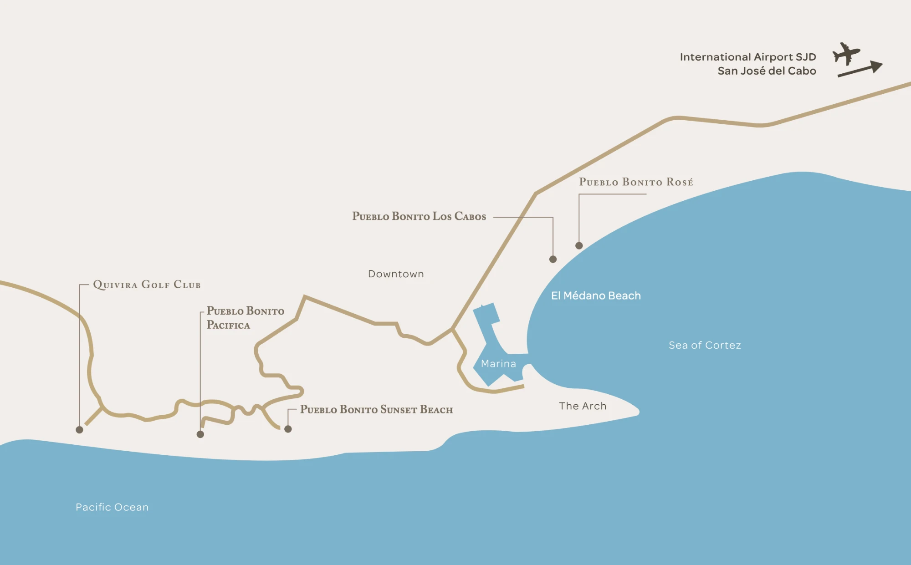

Los Cabos is in its dry season this time of year — warm, sunny days and cool nights, with almost no rain.
Typical/historical averages for mid-January, not a live forecast.
Everywhere we might eat or drink this trip, in one place — most are inside Pacifica or a quick trip to Quivira next door.
Everything for this trip sits along a short stretch of Pacific coastline just west of downtown Cabo San Lucas.
